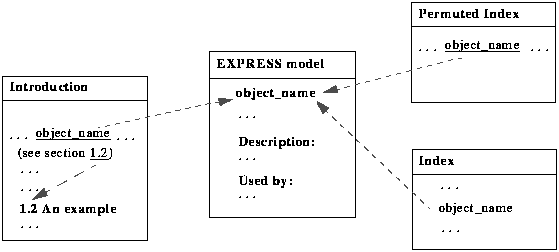

The Information Model document is organised into the following sections.
Introduction - This section provides a general overview of the EDIF Version 4 0 0 Information Model. Hyperlinks are given to two classes of objects: the corresponding definitions of objects in the EXPRESS model and cross-references to sections and figures within the introduction.
EXPRESS Model - This section provides the EDIF Version 4 0 0 Information Model in EXPRESS. It is divided into various schemas. Each schema contains definitions of objects. Each object definition is divided into three parts:
EXPRESS code
object description
"used by" section which indicates where the object is used.
Several appendices are given which help in the understanding of the information model:
Level 0 changes - This gives the summary of changes from the EDIF Version 4 0 0 Level 0 information model. All underlined words are hyperlinks to the definition of the objects in the EXPRESS model.
Permuted Index - This gives the permuted index of the objects defined in EDIF Version 4 0 0. All hyperlinks jump to the definition of the objects in the EXPRESS model.
Index - This lists the objects which are defined in EDIF Version 4 0 0. Every object has a hyperlink to its definition in the EXPRESS model.
Table of contents - This gives the general organisation of the Information Model.
List of figures - This gives a summary of diagrams.
List of tables - This gives a summary of tables.
Hyperlinks are set up according to the following diagram.
